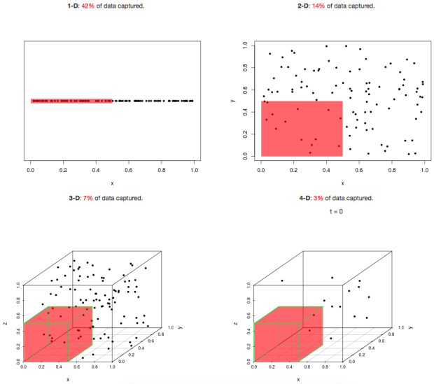

Dimensionality reduction
Types of statistical analysis
Univariate
- One variable
Bivariate
- Two variables (x and y)
Multivariate
also multidimensional
- Many variables

The curse of higher dimensions
- Computational ineffectivity.
- Low data density in higher dimensions.
- Problematic visualization, human brain does not easily cope with more than 3D.
- Difficult interpretation.
→ Dimensionality reduction
Dimensionality reduction techniques
Principal component analysis (PCA)
- Numeric (continuous) data.
Correspondence analysis (CA)
- Categorical data.
Principal component analysis
The goal of PCA is to find low-dimensional representation of the observations that explain a good fraction of the original variation.
- First principal component is a direction that maximizes the variance of the projected data.
- Second PC is orthogonal to the previous one.